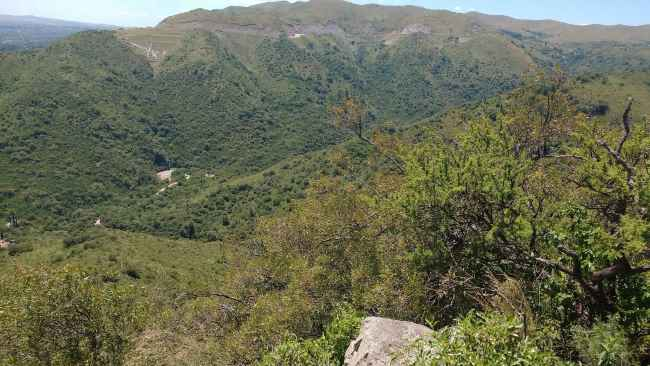
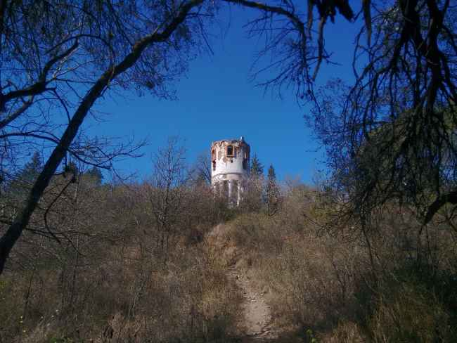
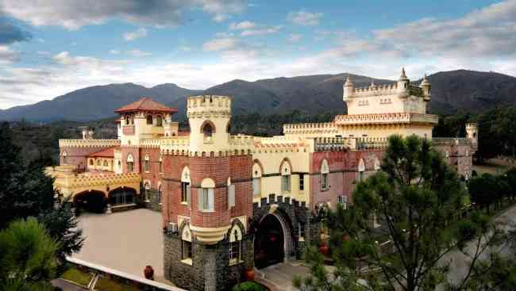

¿Porqué elegir valle hermoso?
Como su nombre lo refleja, Valle Hermoso es uno de los destinos más bellos del Valle del Punilla. Destino de calma serrana, sus paisajes naturales son un “ticket” directo al descanso y al relax.
Una propuesta todoterreno
Entre cascadas y balnearios, ríos y arroyos, se trata de una propuesta completa para descubrir en el Valle de Punilla que incluye museos, iglesias y hasta un castillo histórico.

Opción infalible: balnearios
Para recargar energías, los balnearios Villa Yacoana y Dique La Isla, son dos opciones a la vera del río San Francisco o Grande de Punilla. Además, desde aquí se pueden emprender paseos en bici o a caballo.

¿Qué es lo que no puede faltar en el plan de escapada?
 Sin duda, conocer la Reserva Natural Vaquerías. Se trata del escenario ideal para hacer caminatas en medio de un bosque chaqueño serrano, entre flora y fauna autóctona. En su interior, llaman la atención dos imperdibles: la Cascada del Ángel y la de los Helechos. Y al plan se le suma como extra, ascender al cerro de La Cruz para obtener panorámicas únicas. En tanto, para refrescarse la clave es disfrutar de las aguas cristalinas del arroyo Vaquerías.
 Para incluir al paseo, se recomienda visitar dos museos con propuestas diferentes, pero imperdibles. Por un lado, para que los más pequeños aprendan de manera ingeniosa sobre física, astronomía y botánica, es el Paseo con Ciencia, un espacio interactivo para disfrutar en familia. Otra opción es el Museo Municipal Capitán Juan de Zeballos. Dedicado a la arqueología y paleontología – entre otras disciplinas – en sus seis salas se exhiben, además, diversas antigüedades, pinturas y documentos sobre la historia de la localidad.
Entre iglesias y un castillo histórico
En la visita, una postal histórica es la que regala el Castillo Hotel Fabrega, a sólo un kilómetro de la ruta 38. En el año 2002 —durante una de las peores crisis de la historia argentina—, la familia Fábrega compró las ruinas del castillo del siglo XIX, y las convirtió en el primer y único hotel 5 estrellas del país fuera de una ciudad capital.
.jpg "Fiesta de gala en el interior del castillo Fábrega") Actualmente El Castillo opera como un centro de trabajo y capacitación para empresas, donde se desarrollan programas propios que combinan información científica y actividades artísticas. En los períodos de vacaciones escolares, y durante otros programas temáticos tales como el Retiro de Danza, El Castillo hospeda exclusivamente a familias y particulares. Hoy es un icono emblemático de la zona.
Actualmente El Castillo opera como un centro de trabajo y capacitación para empresas, donde se desarrollan programas propios que combinan información científica y actividades artísticas. En los períodos de vacaciones escolares, y durante otros programas temáticos tales como el Retiro de Danza, El Castillo hospeda exclusivamente a familias y particulares. Hoy es un icono emblemático de la zona.
Circuito religioso
Si se continua caminando, es posible encontrar un imperdible: la Gruta de Santa Teresa, a la cual se accede subiendo hasta la mitad de un cerro. Por su parte, otra de las postas religiosas para descubrir, es la capilla Cristo del Río, que contiene un crucifijo creado del tronco de un sauce. Y, para finalizar el recorrido, no puede faltar en la lista, la capilla San Antonio, uno de los tesoros patrimoniales que tiene Valle Hermoso.
Datos útiles
Cómo llegar:
En colectivo, las empresas que se dirigen a Valle Hermoso son Ersa, Lumasa, La Calera o Sarmiento. En tanto, en auto habrá que tomar la ruta E 53 y continuar por el majestuoso Camino del Cuadrado hasta llegar a destino. Se encuentra a unos 80 kilómetros de la ciudad de Córdoba.
Dónde hospedarse:
Entre las opciones, resaltan hoteles, cabañas y posadas que se encuentran, sobre todo, en el área céntrica de la localidad. Se suma un complejo vacacional en la Reserva Natural Vaquerías y el Castillo Hotel Fabrega, disponible para reservas en ciertas épocas del año.
Gastronomía:
En esta zona se pueden encontrar chacinados artesanales y chivitos a la parrilla; una cava para hacer degustaciones y restaurantes de estilo rústico que ofrecen comidas caseras y criollas, además de exquisitas pastas.
Reserva natural Vaquerías - Reseña
Por sus particulares características, la belleza de sus paisajes y abundancia de recursos, Vaquerías fue apreciada tanto por las poblaciones originarias que habitaron este territorio al que llamaron – Lampatu Mayu – durante los siglos XV y XVI, como los españoles a partir de la colonización en el siglo XVIII.Su nombre actual se debe a que los jesuitas destinaron este sitio para la cría de ganado vacuno, siendo además un lugar de paso por el antiguo camino real. Alrededor del año 1900, los predios de Vaquerías fueron adquiridos por el Sr. Antonio Marcuzzi, que inicia la construcción de un complejo hotelero en este privilegiado lugar, rodeado de sierras y circundado por un caudaloso arroyo. Finalmente en el año 1970, la Universidad Naciona de Córdoba compra las 400 hectáreas que componen hoy el complejo turístico y el área de la reserva. Hoy día la Reserva Natural Vaquerías es un nicho ecológico, que posee un microclima fresco aún en los días del verano. El complejo hotelero es administrado por la Obra Social Universitaria, llamada también por el acrónimo de su nombre original, DASPU.
Valle Hermoso en imágenes
Glosario
- Chacinados
- “Se entiende por chacinados, los productos preparados sobre la base de carne y/o sangre, vísceras u otros subproductos animales que hayan sido autorizados para el consumo humano, adicionados o no con sustancias aprobadas a tal fin”.
- Mayu
- mayu del originario quichua significa "río"
- Cava
- Vino espumoso que se cría en la misma botella en que luego se consume: "el cava catalán es el mismo tipo de vino que el champán francés."
- Dependencia subterránea donde se elabora y conserva este vino.
- Jesuitas
- es una orden religiosa de clérigos regulares de la Iglesia católica fundada en 1534 por el español Ignacio de Loyola. Con 16 088 miembros en 2017 (de los cuales 11 583 eran sacerdotes ordenados),5 es la mayor orden religiosa católica hoy en día. Su actividad se extiende a los campos educativo, social, intelectual, misionero y de medios de comunicación católicos, además de atender 1.509 parroquias en todo el mundo (a fecha de 2016).
Acerca del autor
- Nombre:Pablo Godoy
- Edad: 31 Años
- EMail: pablo.godoy@davinci.edu.ar